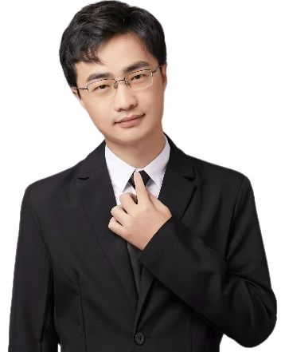
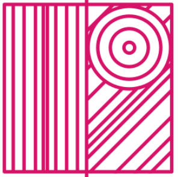
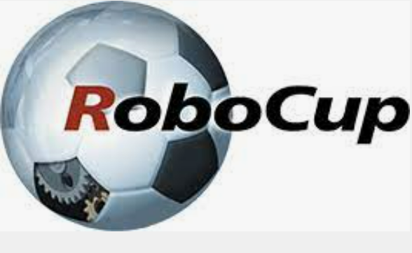

Hongyuan Yu 俞宏远Senior Algorithm EngineerMultimedia Department Xiaomi Inc. Email: hongyuan_yu@yeah.net |
 |
News
-
2022.08.22, I have updated my personal website!
Biography
Hongyuan Yu received the BSc degree from Nankai University (NKU) in 2017, and the PhD degree from University of Chinese Academy of Sciences (UCAS) in 2022, working with Liang Wang and Yan Huang. Since July 2022, he has joined the Multimedia Department, Xiaomi Inc as a senior algorithm engineer. He interned at Baidu Inc., Microsoft Research Asia, Microsoft Cloud AI and Ant Group.
His research interests include efficient deep learning, video object tracking, segmentation and detection, neural architecture search, model compression, etc. He was the valedictorian of Institute of Automation Chinese Academy of Sciences. He has obtained awards such as the Presidential Award of CAS, Excellent Graduate of Beijing, and ICDAR 2019 Best Paper Runner-up Award.
Selected Journal Papers
Hongyuan Yu, Houwen Peng, Yan Huang, Hao Du, Jianlong Fu, Liang Wang, and Haibin Ling, Cyclic Differentiable Architecture Search, IEEE Transactions on Pattern Analysis and Machine Intelligence (IEEE TPAMI), accepted, 2022. PDF
Zerui Chen, Yan Huang, Hongyuan Yu, and Liang Wang, Learning a Robust Part-Aware Monocular 3D Human Pose Estimator via Neural Architecture Search, International Journal of Computer Vision (IJCV), 130: 56–75, 2022. PDF
Chao Fan, Hongyuan Yu, Yan Huang, Caifeng Shan, Liang Wang, and Chenglong Li, SiamON: Siamese Occlusion-aware Network for Visual Tracking, IEEE Transactions on Circuits and Systems for Video Technology (IEEE TCSVT), accepted, 2021. PDF
Hongyuan Yu, Yan Huang, Lihong Pi, Chengquan Zhang, Xuan Li, and Liang Wang, End-to-end Video Text Detection with Online Tracking, Pattern Recognition (PR), accepted, 2021. PDF
Selected Conference Papers
Weichen Yu, Hongyuan Yu, Yan Huang, and Liang Wang, Generalized Inter-class Loss for Gait Recognition, ACM Conference on Multimedia (MM), accepted, 2022. PDF
Hongyuan Yu*, Tian Li*, Weichen Yu*, Jianguo Li, Yan Huang, Liang Wang, and Alex Liu, Regularized Graph Structure Learning with Semantic Knowledge for Multi-variates Time-Series Forecasting, International Joint Conference on Artificial Intelligence (IJCAI), accepted, 2022. (Oral, 15% acceptance rate) PDF
Wenmei Xu, Hongyuan Yu, Wei Wang and Liang Wang, Joint Learning Appearance and Motion Models for Visual Tracking, Chinese Conference on Pattern Recognition and Computer Vision (PRCV), 2021.PDF
Zerui Chen, Yan Huang, Hongyuan Yu, Bin Xue, Ke Han, Yiru Guo, and Liang Wang, Towards Part-aware Monocular 3D Human Pose Estimation: An Architecture Search Approach, European Conference on Computer Vision (ECCV), accepted, 2020. (Spotlight, 5% acceptance rate) PDF
Houwen Peng*, Hao Du*, Hongyuan Yu*, Qi Li, Jing Liao, and Jianlong Fu, Cream of the Crop: Distilling Prioritized Paths For One-Shot Neural Architecture Search, Neural Information Processing Systems (NeurIPS), accepted, 2020. PDF
Hongyuan Yu*, Chengquan Zhang*, Xuan Li, Junyu Han, Errui Ding, and Liang Wang, An End-to-end Video Text Detector with Online Tracking, International Conference on Document Analysis and Recognition (ICDAR), 2019. (Best Paper Runner-up Award, 0.5% acceptance rate) PDF
Hongyuan Yu, Yan Huang, Lihong Pi and Liang Wang, Deconvolutional Generative Adversarial Networks with Application to Video Generation, Chinese Conference on Pattern Recognition and Computer Vision (PRCV), 2019.PDF
Competitions
|
1st Learning and Mining with Noisy Labels Challenge. Our team (Weichen Yu, Hongyuan Yu, Yan Huang, Dong An, Keji He, Zhipeng Zhang, Xiuchuan Li, Liang Wang) is the runner-up of task 1-1 and 2nd runner-up of task 1-2. See details here: Results. |
|
REVERIE Challenge 2022. Our team TouchFish (Dong An, Yifeng Su, Shuanglin Sima, Hongyuan Yu, Weichen Yu, Yan Huang) is the runner-up of channel 2. See details here: Results of REVERIE Challenge 2022. |
|  |
VOT 2019: Visual Object Tracking Challenge. Our team (Hongyuan Yu, Houwen Peng, Zhirong Wu, Yan Huang, Jianlong Fu, Liang Wang) is the champion of the task: RGB-D. See details here: Results of VOT 2019. |
|  |
ROBOCUP JAPAN OPEN 2016. Our team ( Zhengdong Luo, Zihao An, Chengguang Xu, Fengting Li, Shuning Han, Yuanyuan Tong, Yanmei Jiao, Hongyuan Yu, Xiaotang Du) is the champion of the task: Home and Simulation, the runner-up of the task: Education. See details here: Results of ROBOCUP JAPAN OPEN 2016. |
Professional Activities
Valedictorian, Institute of Automation Chinese Academy of Sciences (2022)
Chair, IEEE Student Branch, University of Chinese Academy of Sciences (2019-2020)
Reviewer, ICLR, NeurIPS, ECCV, AAAI, ACM MM, PR, ICIG, ICME, etc
Honors and Awards
2022, Runner-up of Learning and Mining with Noisy Labels Challenge (IJCAI-ECAI)
2022, Runner-up of REVERIE Challenge (CSIG)
2022, Valedictorian of Institute of Automation Chinese Academy of Sciences
2022, 中科院院长奖
2022, 北京市优秀毕业生
2021, 中国科学院自动化研究所攀登一等奖学金
2020, 中国科学院大学IEEE学生分会主席贡献奖
2019, Champion of RGBD Object Tracking Challenge in the Workshop on VOT, ICCV 2019
2019, 中国科学院大学三好学生
2017, 中国科学院自动化研究所新生奖学金
2016, Runner-up of ROBCUP JAPAN OPEN, 2016
2016, 南开大学公能奖学金
2016, 华为杯智能设计大赛三等奖
2015, Honorable Mention of MCM 2015
2014-2016, 国家励志奖学金
2014-2016, 南开大学优秀学生干部
| © Hongyuan Yu | Last update: Aug 2022 |